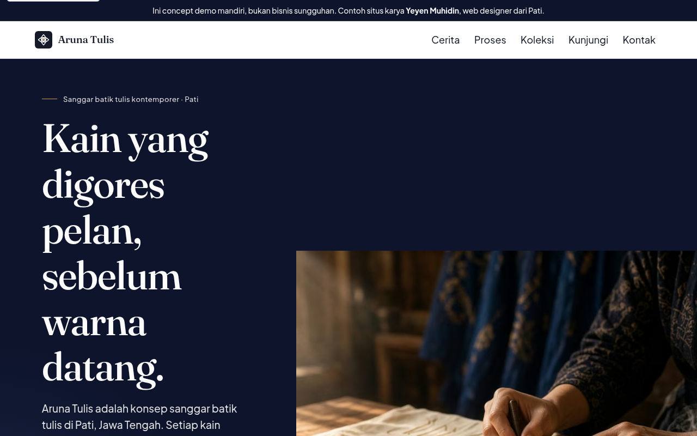
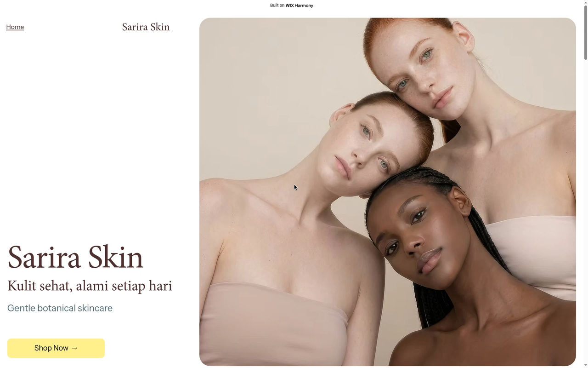

Landing page
Satu halaman untuk memperkenalkan usaha, jasa, atau penawaran, lengkap dengan tombol ke WhatsApp atau tautan yang kamu pakai.
Yeyen Muhidin merancang halaman web yang jelas di ponsel dan komputer. Pemesanan dan pembayaran lewat Fiverr, agar rincian paket dan revisi tercatat di sana.
Fokusnya halaman usaha, portofolio, atau landing page. Bukan toko daring besar dengan sistem gudang atau aplikasi berlangganan yang rumit.
Satu halaman untuk memperkenalkan usaha, jasa, atau penawaran, lengkap dengan tombol ke WhatsApp atau tautan yang kamu pakai.
Beberapa halaman, misalnya beranda, produk atau jasa, tentang, dan cara pesan. Cocok jika isinya sudah tidak muat di satu layar.
Menata ulang tampilan agar lebih rapi di ponsel, memperbaiki susunan, atau menyesuaikan desain, sesuai kesepakatan di pesanan.
Harga, durasi, dan jumlah revisi mengikuti paket yang tertulis di Fiverr pada saat kamu memesan. Halaman ini tidak memasang angka harga sendiri agar tidak tertukar dengan paket yang sedang berlaku.
Dua tautan berikut adalah contoh tampilan, bukan studi kasus klien dan bukan bukti penjualan. Anggap sebagai gambaran gaya desain.

Demo konsep situs butik batik. Bukan toko yang sedang berjualan di tautan ini.

Demo konsep situs perawatan kulit. Bukan merek klien yang diklaim sebagai portofolio berbayar.
Tidak ada formulir, nomor telepon, atau alamat kantor di situs ini. Untuk produk template yang bisa kamu unduh sendiri, kunjungi halaman toko.